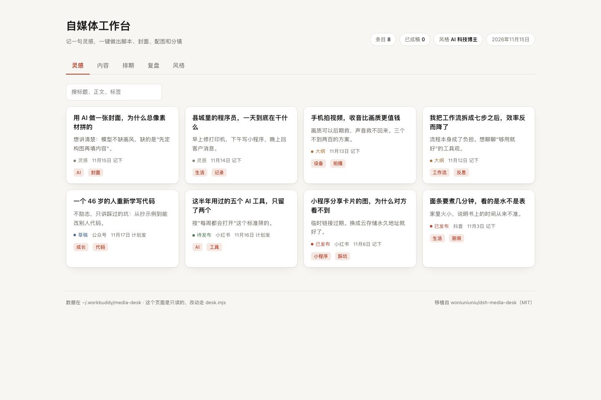
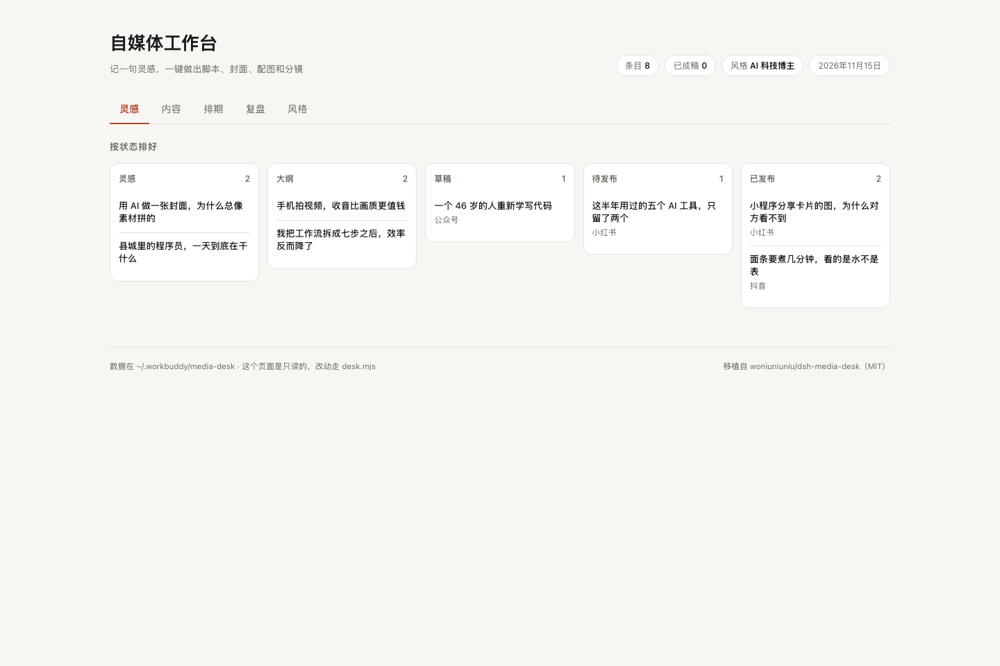
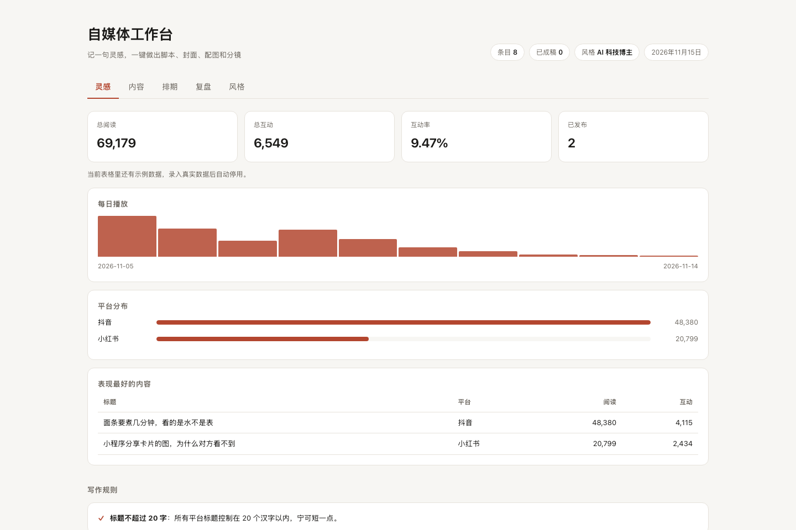

一句话记灵感
直接出能发的稿子
口播脚本、封面大字、分镜、发布排期，一步到位。发出去之后的数据再读成你自己的写作规则——下一稿比这一稿省力。

说人话，它就懂
不用记命令，也不用先想清楚结构。四句话覆盖了从灵感到复盘的一整轮。
半句话就够
「记个灵感：用 AI 做封面总像素材拼的」——不用组织语言，先落地再说。
一次成稿
策划案、口播脚本、封面字、六镜分镜一起出，体裁和风格卡你自己定。
点名改，不重写
「第 3 镜换俯拍」「封面字更有冲击力」——只动你点的那处。
数据变规则
录一周播放互动，提炼规律，确认后写进规则，之后每稿自动生效。
一句话装好
需要 Node.js 20 以上和 WorkBuddy 桌面版。全程不改配置文件。
推荐把这段粘给 WorkBuddy，它自己装
装成技能——之后在任何会话里说「记个灵感」就命中。它会克隆、挂软链、跑一次自检，不碰你已有的数据。
帮我把自媒体工作台装成 WorkBuddy 技能：从 https://github.com/phs-bitqun/workbuddy-media-desk 克隆到 ~/.workbuddy/media-desk-src，把 ~/.workbuddy/skills/media-desk 软链接到它的 skills/media-desk，跑一次 scripts/desk.mjs 的 doctor 确认打印出「内置风格预设 15 个」，装完提醒我重启 WorkBuddy；不要动 ~/.workbuddy/media-desk/ 里已有的数据。
或者手动三步，装成专家卡
拿到包，放进专家目录
# macOS / Linux
git clone https://github.com/phs-bitqun/workbuddy-media-desk.git
mkdir -p ~/.workbuddy/plugins/marketplaces/my-experts/plugins
cp -R workbuddy-media-desk \
~/.workbuddy/plugins/marketplaces/my-experts/plugins/
不想用 git：仓库右上角 Code → Download ZIP，解压后把里面那层文件夹拷进同一个目录。
重启 WorkBuddy
左侧点「专家」，会出现一张「自媒体工作台」卡片，头像是位戴眼镜的编辑。点进去就能用。
核验（可选）
node ~/.workbuddy/plugins/marketplaces/my-experts/plugins/\ workbuddy-media-desk/skills/media-desk/scripts/desk.mjs doctor
打印出数据目录和「内置风格预设 15 个」就说明通了。数据落在 ~/.workbuddy/media-desk/，纯本地，不上传。
上面那句提示词实际跑的就是这条命令，想自己在终端里来一遍：git clone --depth 1 https://github.com/phs-bitqun/workbuddy-media-desk ~/.workbuddy/media-desk-src && bash ~/.workbuddy/media-desk-src/install.sh。两种装法共用同一份数据，也可以同时装。
五页看板，随时看进度
灵感 · 内容 · 排期 · 复盘 · 风格。只读，用浏览器打开即可，改数据还是走对话或命令行。


为什么不是一个网页应用
一个 state.json
换电脑就拷目录，占空间几 MB。撤销链、版本、排期全在里面。
只走 CLI 改
所有写入收敛到一个入口，避免手改文件把撤销链写坏。
15 张风格卡
AI 科技、美食探店、读书笔记……也能从你自己的旧稿里提炼一张。
MIT 上游移植
流程与提示词来自 woniuniuniu/dsh-media-desk，换成 WorkBuddy 的形态。